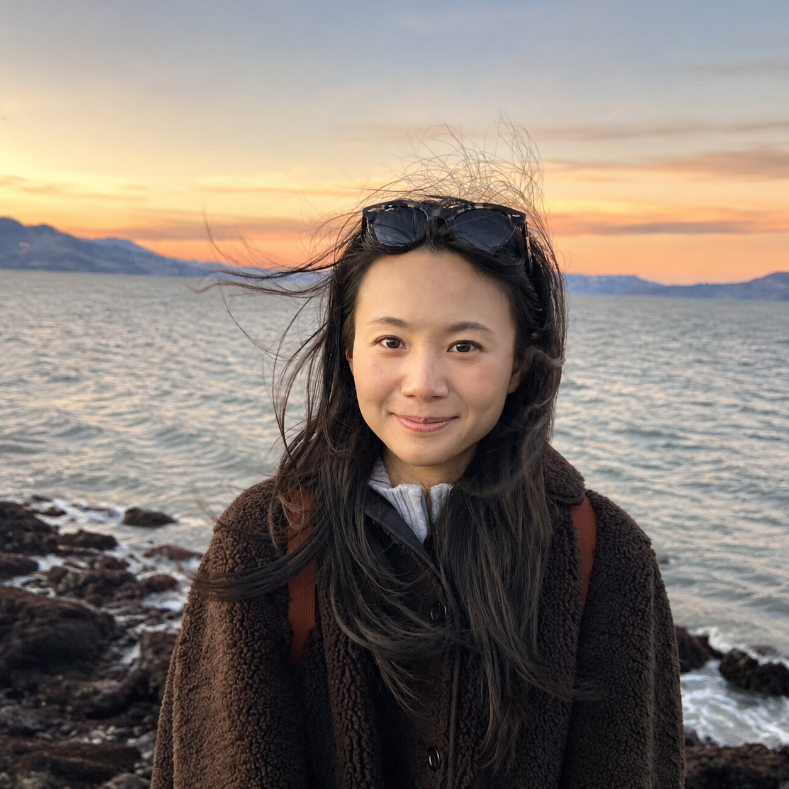

2026
An Empirical Study on Noisy Data and LLM Pretraining Loss Divergence
Under submission · DATA-FM @ ICLR 2026

I am a PhD student at the University of Oxford, interested in large language model research across all stages of training. Previously, I interned as a research scientist in Meta’s core Llama team and FAIR. Before my PhD, I worked full-time at Cohere doing research and building some of the first 100B+ parameter models ever in early 2022. I wrote my Master’s thesis on cooperative multi-agent reinforcement learning at the University of Toronto and the Vector Institute.
01
* indicates equal contribution or joint last authors
Under submission · DATA-FM @ ICLR 2026
EMNLP 2025 Main
NeurIPS 2024 · Also at ES-FoMo and NGSM @ ICML 2024 (Spotlight Talk)
AAMAS 2024 (Oral)
AAMAS 2022 (Oral)
02
2025
2024—2025
2023—2024
2022
Cohere · Toronto, Canada
Built LLM pretraining frameworks using JAX & TPUs. Co-owned pretraining runs of O(100 Billion) parameters.